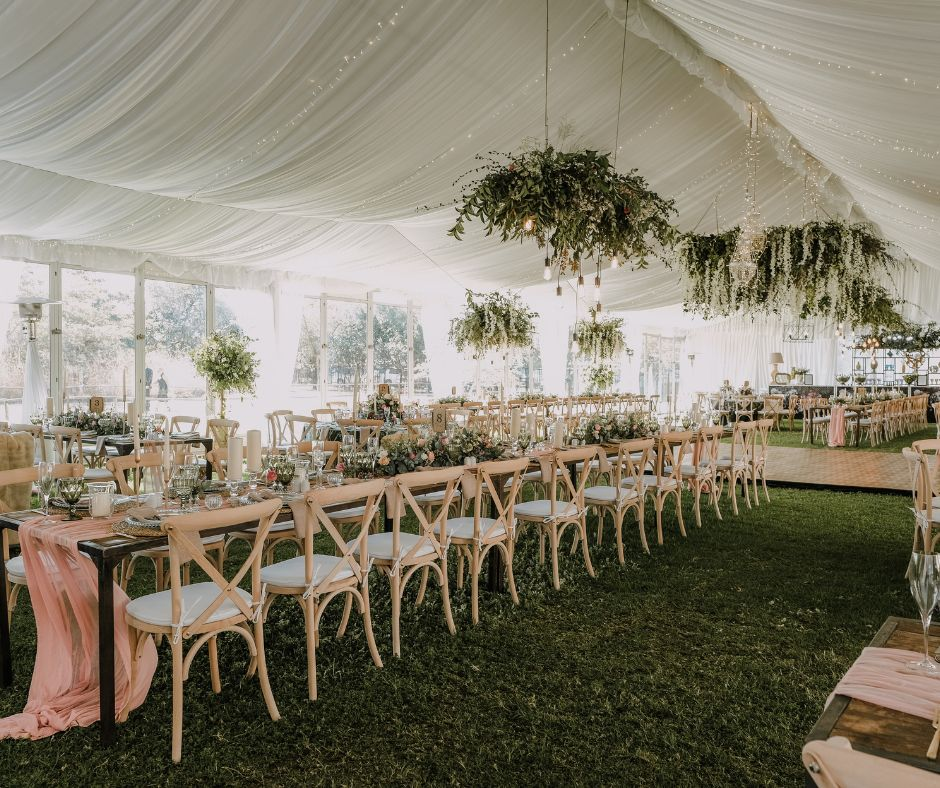
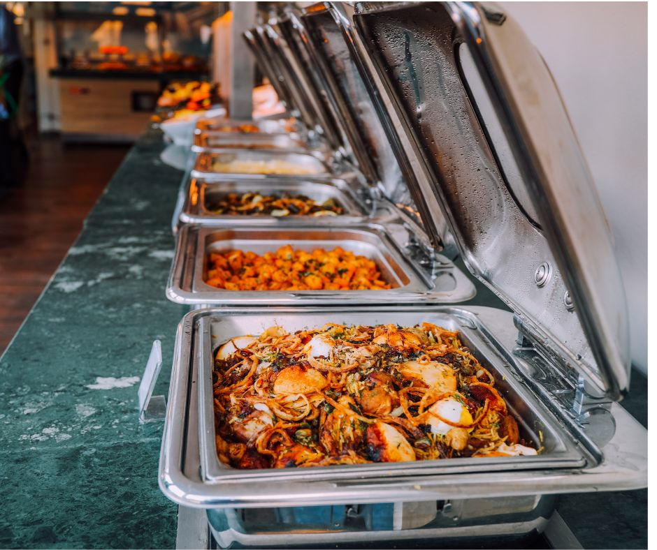

We design and deliver bespoke events that reflect the unique personality and vision of each client. We expertly balance the art of letting you dream big and bring fresh ideas that elevate your vision, while being rooted in practicality and maintaining meticulous attention to every detail.
Yes we love the beautiful decor and flowers like anyone else, but the key to making your event unforgettable lies in Good Entertainment. It is the one shared experience for all your guests to enjoy together, whether its the DJ, cocktail bar, surprise fireworks, even the way food is presented could be entertainment. This is where we can create the element of wonder and surprise that gets people saying “Wow, this was the best wedding I’ve been to!”
savy foods offers both onshore and offshore catering services, from executive dining to basic vendor solutions. We offer workplace and event catering in addition to our top-notch catering services, with a strong emphasis on taste, safety and excellent hygiene. . Our major selling point aside from being the best caterer in Nigeria is the timeliness of our delivery. We hold internal meetings for upcoming events to deliver the best and nothing less.
